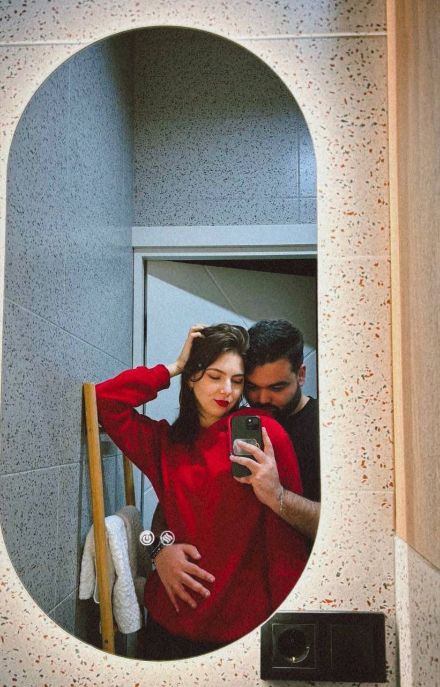
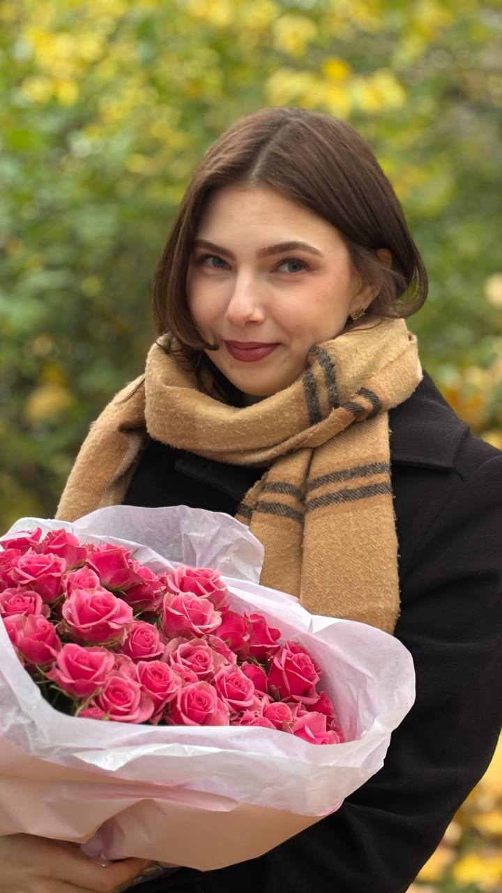

маленькое письмо от Абдуши
Моя дорогая
звёздочка ✨
Для моей שמש — самого тёплого солнышка.
С любовью, твой Абдуши ♡
страница 02 · от Абдуши
Наш первый месяц
Моя любимая, уже целый месяц мы идём рядом, и мне хочется сказать тебе, как сильно я этому рад. За это время ты стала человеком, о котором я думаю с улыбкой, человеком, которому хочется рассказывать обо всём.
Пусть это только начало нашей истории. Я хочу, чтобы впереди у нас было ещё очень много общих месяцев, маленьких традиций, смешных моментов и больших счастливых воспоминаний.
Твой Абдуши 💗
страница 03 · моя любимая
Ты — моё солнышко
Ты даже не представляешь, как сильно умеешь делать мои дни светлее. Иногда достаточно одного твоего сообщения, одной улыбки или просто мысли о тебе — и на душе уже становится теплее.
Мне нравится в тебе столько всего: твоя улыбка, твой взгляд, твоя нежность, твой характер и все те маленькие особенности, которые делают тебя именно тобой.
котик подтверждает: ты чудесная!
Я очень тобой дорожу. — Абдуши
страница 04 · наши моменты
Моё любимое «мы»

Когда я смотрю на это фото, я думаю не только о том, как мы выглядим, а о том, как мне хорошо рядом с тобой. Хочу ещё много таких мгновений — держать тебя за руку, обнимать и просто быть рядом.
Обнимаю крепко-крепко, Абдуши 🤍
страница 05 · самая прекрасная
Моя невероятная девочка

Посмотри, какая ты прекрасная. Но для меня твоя красота — это не только внешность. Это ещё и твоя душа, твоё тепло и то особенное чувство, которое появляется у меня рядом с тобой.
Для тебя — самые нежные слова. Твой Абдуши 💌
страница 06 · обещание
Я хочу беречь наше счастье
Я не обещаю, что каждый день будет идеальным. Но я хочу стараться, слышать тебя, поддерживать, смешить, заботиться и напоминать, что ты не одна.
Хочу быть тем, рядом с кем ты можешь быть собой — радоваться, мечтать, уставать, смеяться и делиться даже самыми неожиданными мыслями.
С любовью, Абдуши ♡
от всего моего сердца
Спасибо, что ты у меня есть, моя שמש!
Навсегда твой Абдуши ✨